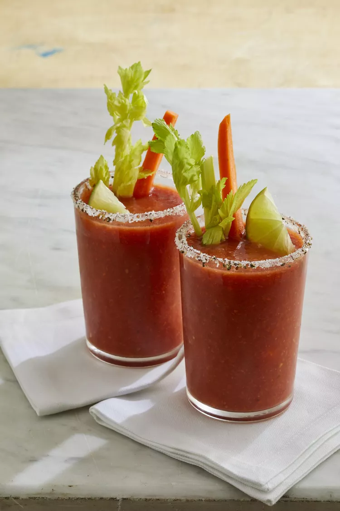

Home
Virgin Mary Smoothies

Description
Whirl up a virgin version of your favorite cocktail in smoothie form! Garnish with celery stalks, carrot sticks, and/or lime slices.
Ingredients
- 1 (28 ounce) can whole peeled tomatoes
- 1 stalk celery, sliced
- 1 medium carrot, sliced
- 1 teaspoon Worcestershire sauce
- 1 teaspoon prepared horseradish, or more to taste
- ¼ teaspoon hot sauce
- 1 cup ice cubes
Directions
- Blend tomatoes, celery, carrot, Worcestershire sauce, horseradish, and hot sauce in a blender until very smooth. Add ice cubes and blend until smooth.